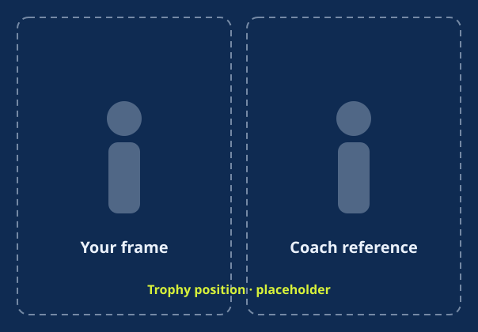

Your drill
Knee bend pause
2 × 8
At the bend, pause for one second with your front knee over your ankle, not past it. Then serve.
Set up your phone, practise your serve, and see what your footage shows.
No practice sessions yet.
Insights appear after a session with enough reliable footage to analyse.
Your practice data stays on this phone. Clearing your browser data or losing the phone can delete it.
Choose where you’ll serve from. You can still switch sides while you record.
Deuce is the right half as you face the net.
Aim for 10 on Deuce and 10 on Ad (20 in total).
A target is a guide, not a limit. Recording doesn’t stop when you reach it, and the app doesn’t count serves yet.
Your serving hand and where your tripod will stand.
Deuce is the right half as you face the net.
This is where the tripod stands on court. Front or rear phone camera is chosen separately on the Record screen.
From the side, the camera sees your whole body side-on.
About 5 mroughly 6 big steps
Your camera is on the far side, so it’s a bit further away. That’s fine; just use the same spot every time.
Too low makes your toss look higher than it is. Too high squashes your legs.
Checking level…Hold the phone in its mount
Walk to your serving spot and raise your tossing arm high, as if you’re about to toss.
Next time, set up the same way and I’ll show your saved picture as a guide to match.
You have an unfinished practice.
No clips yet. Press Start recording, practise, then Stop to save a clip. Change side or camera between clips.
No recordings yet. Go to Record, start a practice and save a clip; it appears here.
Keep your recordings safe on iPhone: tap Share › Add to Home Screen and open Serve Coach from there. Safari can clear a website’s saved videos if you don’t visit it for about a week.
Example contentThe coaching, comparisons and sessions below are illustrations, not your data. They arrive in a later version.
Example session. 10 serves.
Your toss didn’t drift once. That’s three weeks of work paying off.
On second serves your knee slid forward instead of bending down. That pushes your weight forward early, so the ball goes long.

This is where your fix lives. Coach bends the knees over the feet, then drives up.
2 × 8
At the bend, pause for one second with your front knee over your ankle, not past it. Then serve.
No notes yet. Jot down what you tried, and your coach will take it into account.